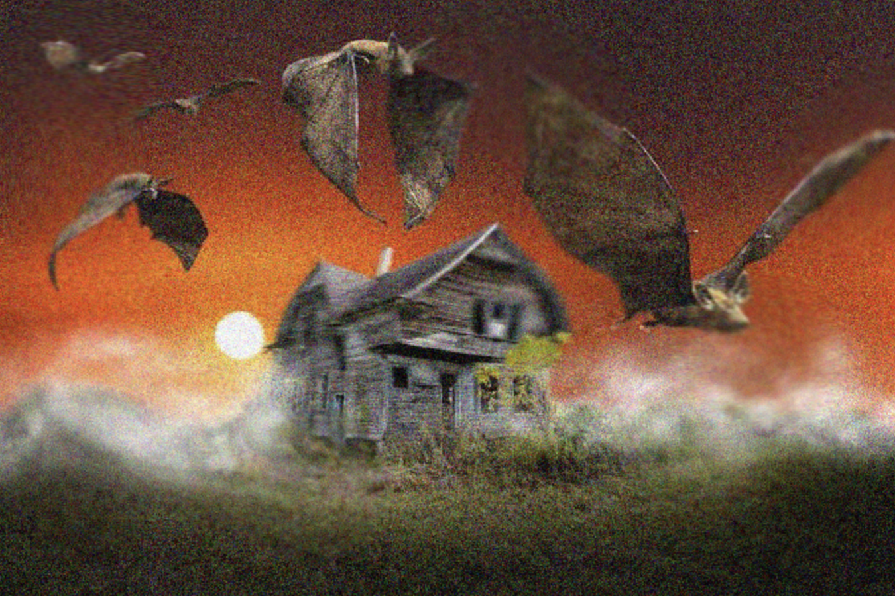

The air smells of musk. Your sensory organs have been hijacked by the
elixir of nostalgia. The image of a grande sized pumpkin spice latte from
Starbucks gets implanted into your head. Yeah... it is definitely fall.
You came here for one thing and one thing only. Your beloved cat
"cookie butter". Her routine checkup at the animal hospital begins at 9:00 PM. You must
rescue her before time runs out... Or else the evil animal veterinarian
will cast a spell on
cookie butter
to bake her into a double chocolate chunk cookie. The time is 8:14 PM.
Under the
crimson sky, the wind
brushes your shoulder with the ever so slightest sincerity. Cling
HARD
onto this fleeting feeling, as it will fade away soon.
